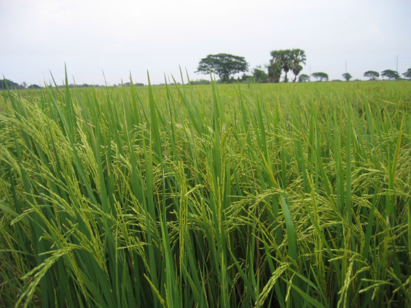

PESTS OF RICE
More than 100 insect species are associated with the rice crop at one stage or the other and 20 of these are pests of major economic significance. Among the sucking pests, BPH, GLH, WBPH, rice earhead bug pose severe threat to rice production.
